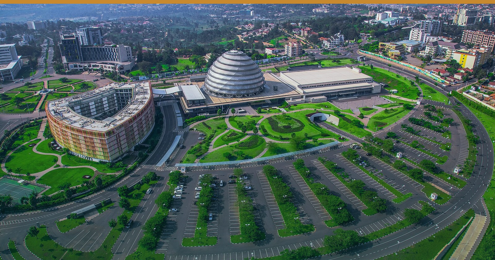

← All editionsUganda beat Ebola.
🗓 9 August 2026
Uganda beat Ebola. Its recovery is still hostage to a border it doesn't control.
Uganda was declared Ebola-free on 28 July and completes its 42-day all-clear around 28 August. Yet after the US CDC's entry-order decision this week — due on or about 12 August — Uganda will almost certainly still carry a Level 4 "Do Not Travel" advisory. Read day-to-day, the daily briefs kept reporting the same non-news: the advisory board hasn't moved. Read as a pattern, that stasis is the single most important fact of the quarter. Nothing Uganda did to earn a clean bill changed its traveller-facing risk label, because the label is set by decision cycles in Washington coupled to DRC's outbreak — now past 4,000 confirmed cases, the largest in DRC's history, with no vaccine for the Bundibugyo strain.
Here's what the market is missing. The CDC entry order was never what suppressed Uganda's most valuable source market. The order bars certain foreign nationals from entering the US; it explicitly exempts US citizens — who are ~18–20% of Uganda's non-African visitors and free to fly to Kampala today. The instrument that actually stalls US leisure demand is the State Department Level 4 advisory, which drives insurance exclusions and corporate no-go policies — and it runs on its own clock, welded to DRC and to non-Ebola factors, not to Uganda's epidemiology. Operators waiting for "the ban to lift" to restart marketing are watching the wrong dial. The dial that matters won't move on 12 August, and it may not move for months.
So stop selling to the timeline of an all-clear that isn't coming. Move budget to the demand that no Western risk desk governs.
THE WEEK'S SIGNALS
1️⃣ DRC's Bundibugyo outbreak topped 4,000 confirmed cases — now the largest in DRC's history and second-largest ever recorded, across 49 health zones, ~44% fatality, no approved vaccine.
🎯 So what: Uganda's recovery clock is set by this number, not its own. Assume the coupling persists through Q3 and plan around it.
🏷 Al Jazeera / WHO, 7 Aug 2026
2️⃣ The US CDC Section 362 entry order (renewed 13 July, 30-day cycle) faces its next decision on or about 12 August — and it exempts US citizens.
🎯 So what: the legal bar never touched your American leisure guest. Brief agents that the barrier is perception and duty-of-care policy, not law — and arm them accordingly.
🏷 Fragomen / CDC port-health order, effective to 12 Aug 2026
3️⃣ Uganda remains Level 4 despite being declared Ebola-free (28 July); the 42-day all-clear completes ~28 August.
🎯 So what: have "Uganda is Ebola-free" collateral built and dated now, ready to fire to trade and non-US markets the moment the countdown closes.
🏷 ChimpReports / Uganda MoH, late July–Aug 2026
🔭 THE DEEP DIVE — Source-market shifts
East Africa's most defensible demand is the demand no G7 risk desk designates: intra-African travel, now a structural pillar rather than a fallback, plus Gulf and European markets whose advisories move independently of Washington's. Regional arrivals rebuilt Africa's tourism past pre-pandemic levels by 2024, helped by visa-free momentum and added airlift. A blunt US regional instrument is a marketing gift to whoever segments beneath it.
🎯 So what: during a designation freeze, weight spend toward markets that don't read a US advisory before booking — and sell the specificity the blunt instrument can't capture (Ebola-free status, park distance from any affected zone).
🏷 GlobalData / regional arrivals context, 2026
• ~12 Aug — US CDC s.362 order decision. → Don't gate marketing on it; assume renewal with Uganda still listed.
• 15 Aug — EPRA fuel review (Kenya). → Lock August transfer & generator quotes before the 15th.
• 18 Aug — WHO IHR Emergency Committee on the PHEIC. → Keep "Uganda is clear" messaging factual, not triumphal.
• 19–21 Aug — Hotel Expo Kenya (Nairobi, KICC). → Hold corporate rate near KICC midweek.
• ~28 Aug — Uganda completes 42-day all-clear. → Fire dated "Ebola-free" collateral to trade and non-US markets.
• 28 Aug — World Travel Awards Africa Gala (Zanzibar). → Hold north/east coast rate that week.
• Early Sept — KNBS/UBOS/NBS August CPI. → Your cost-gap negotiating number.
• 6–8 Oct — Magical Kenya Travel Expo (10,000+). → Close out standard Nairobi rate now.
• 25 Oct — Yas Zanzibar Marathon. → Release event rates and minimum-stays.
If the US won't lift Uganda's label on Uganda's timeline, whose demand are you still building your Q4 around? Reply and tell us.
🔗 This edition on the web: https://eahospitalitypulse.com/editions/foresight-2026-08-09.html
💼 This week's Big Read on LinkedIn: https://www.linkedin.com/company/ea-hospitality-pulse/
— EA Hospitality Pulse | Daily intelligence for city, bush & beach properties
📣 Telegram (full editions) 💬 WhatsApp (daily skim) 💼 LinkedIn (the Big Read) 🗂 Every edition